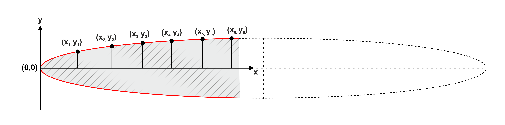

Knowledge of complete dyke dimensions is crucial to determine the actual aspect ratio which is indispensable in estimating their magma overpressure, depth of origin and even explosivity potential of fissure eruptions. A dearth of completely exposed dykes imposes considerable uncertainty on estimates of their aspect ratios. Therefore, we introduce mathematical methods of estimating complete dyke dimensions from their partial exposures consisting at least one visible tip or devoid of any tip. The methods are built upon the idealized canonical model of opening mode fractures and utilizes the elliptical shape of opening of dykes in 2D as formulated in the model. Although developed for dykes, the methods have potential for wider application, since they can be used fundamentally to predict complete dimensions of any elliptical shaped natural features from their partial exposures.
This method (Biswas et al. 2023) solves the equation of ellipse which is the predicted shape of dyke opening in the canonical model using every possible combination of two points lying on the dyke margin measured from the observed tip to estimate the full length, maximum width and aspect ratio.
Cite this method as: "Biswas, S. K., Saha, K., Das, G., and Mondal, T. K. (2023). Estimation of magma overpressure from partially exposed dykes-A new approach. Journal of Structural Geology, 168, 104822." This paper can be found at the following DOI:
https://doi.org/10.1016/j.jsg.2023.104822
Estimate complete dyke dimensions
This method (Biswas et al. 2025) utilizes discrete derivatives derived from limited outcrop measurements made on dyke margins in the differential equations of ellipse, which is the predicted shape of fracture opening in the canonical model, to estimate the full length, maximum width and aspect ratio.
Cite this method as: "Biswas, S.K., Mondal, T. K., Saha, A., Mukhopadhyay A.K., and Mukherjee A. (2025). Estimating Complete Dyke Dimensions from Partial Exposures. Journal of Structural Geology, 192, 105350." This paper can be found at the following DOI: